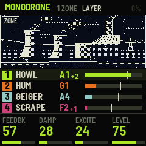
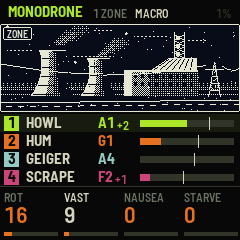

Four layers of drone, each a held chord on one of twelve engines, all running into one chain of dirt, filter, tape delay and reverb. There is no sequencer. You set things running, bend them live, and move between scenes.
Press PLAY. The scene swells in over each layer's SWELL time.
Play a chord on the keys and let go. It keeps sounding: chords latch.
Turn K1–K4 to shape the layer, ALGORITHM to change its engine, PRESETS to move to another scene.
Tap FX and hold a black key for a punch effect. Tap FX again to play notes.
Every key plays a note on the selected layer. Keys held together build a chord of up to four notes; a fifth replaces the last. Let go and the chord keeps sounding. The next key you play afresh starts a new chord, and the voices glide from the old notes to the new over the layer's GLIDE time (3 ms by default).
Press harder on a held key and the chord swells louder and brighter. OCT− OCT+ move the keyboard through six octave positions; it starts on F1–G3. Hold SEL and tap them to move the selected layer's chord itself an octave down or up.
SELECT picks layer 1–4, and ALGORITHM changes its engine. While you hold a chord, the knobs and ALGORITHM act on that chord's layer.
PLAY brings the whole scene in or out and remembers which layers were in. SEQ brings the selected layer in or out. Hold GLO and tap white keys 1–4 to bring single layers in or out. Changing notes never brings a layer back in.
ARP freezes the reverb and the delay: whatever is in them hangs forever. REC makes the SMEAR engine's memory record (lit) or hold what it has.
Hold SEL and turn anything on any page. Let go and every knob springs back to where it was. A scene recalled or a MUTATE (SEL + PLAY) while SEL is held stays.
USB or the TRS jack. Notes in build chords like the keys. CC1 the layer's K1 · CC7 its level · CC74 cutoff · CC71 resonance · CC91 reverb mix · CC93 delay mix · CC120/123 all notes off · aftertouch is key pressure.

1 2 3 4Each macro moves many settings at once, on top of yours. At 0 they do nothing; the top 40 % goes much further. They are not saved with scenes: they're for playing. The level is trimmed as they push, so a full macro doesn't simply get louder.

Hold ENV and turn a macro knob: clockwise jumps to full, anticlockwise to off.
Hold ENV and press GLO: every macro off.
Press ENV from any other page to land on MACRO. On MACRO, press again for MACRO 2, then GLOBAL.
Tap FX. It lights, and the keys switch effects instead of playing notes.
Hold a key: the effect is on while you hold it.
Latch it: hold it 2 s, or tap it twice. Press it again to let it go.
Tap FX again for notes. Latched effects keep going.
While you hold an effect's key, the screen shows its name and K1–K3 become its own controls. K4 is always FADE: how long it takes to come in and go out, 0 to 10 seconds.
Turning a knob while you hold a key stops the 2-second latch, so you can shape it without it sticking. Let go and you're back on your page. Punch settings are kept when you save.
Several can run at once, and they interact. BURN, VOID, SHATTER, WARBLE, DECIMATE, SCREAM and GATE also show in the picture.
In FX mode, ALGORITHM turns through the effects chain's four pages: DIRT, FILTER, DELAY, REVERB.
| Engine | What it is | K1 · K2 · K3 |
|---|
A scene saves every layer (engine, chord, knobs, SHAPE, OUT), the effects chain, WEATHER, GLOBAL, its place and its name. Macros and FX mode are not saved. Punch settings and the keyboard octave are saved with any scene.
Any scene can show any place: LFO twice for SCENE, then K2 PLACE, one place a click. Save to keep it.
| Control | Gesture | What it does |
|---|
Hold OCT− while you switch the FM-1 on, then install M-VAVE's own firmware (or any other) the same way.
Saved scenes live on the FM-1 and survive updates: a newer MONODRONE reads an older one's scenes and moves them forward.
MONODRONE is built on fm1-base and felucca-bsp. Source licensed MPL-2.0. M-VAVE and FM-1 are trademarks of their owners; MONODRONE is not affiliated with M-VAVE.